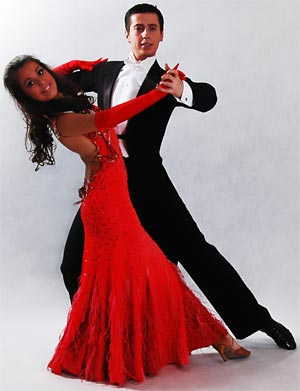
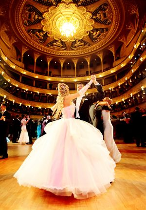
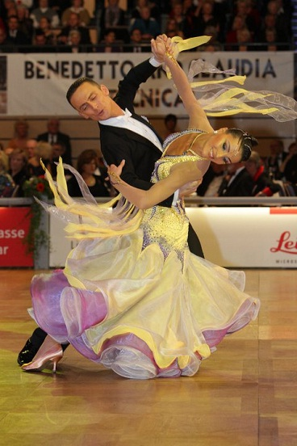
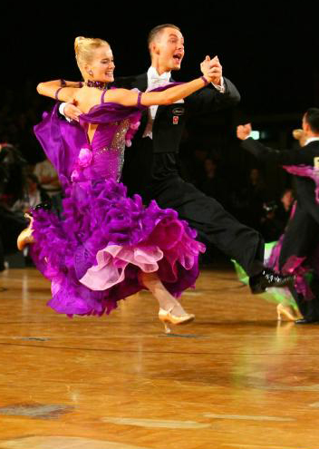
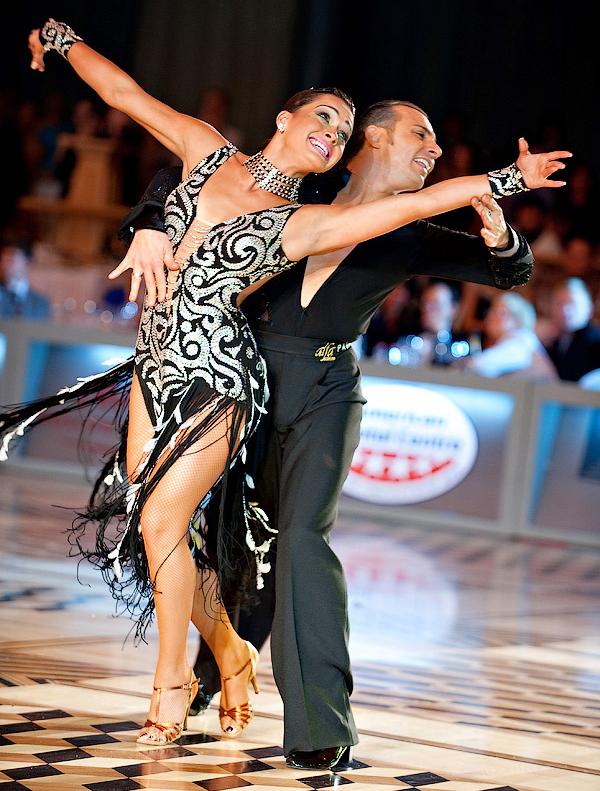
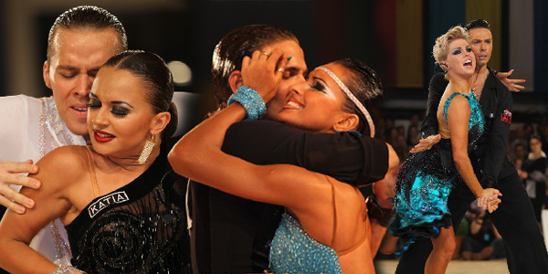
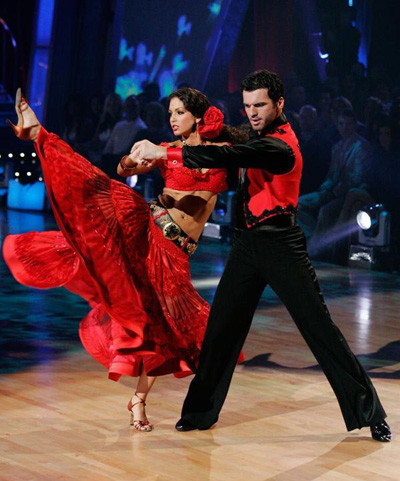
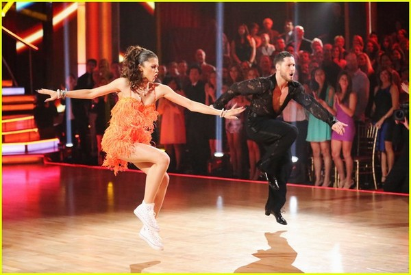
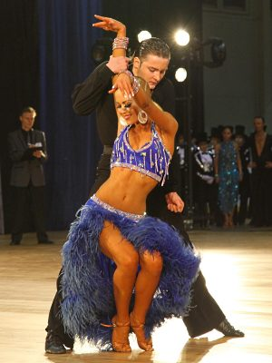

Бальні танці — різновид парних танців, упорядкованих та кодифікованих для спортивних змагань. Спортивні танці визнаються Міжнародним олімпійським комітетом як кандидат в олімпійські види спорту. Нарівні зі спортивним аспектом бальні танці мають також соціальне значення, оскільки їх танцюють у всьому світі для розваги й задоволення і широко використовують у сценічному мистецтві: в театрі, кіно, на телебаченні. В широкому розумінні бальним танцем можна назвати будь-який розважальний танець, який можна танцювати на балах, у танцювальних залах чи салонах. Однак із організацією мережі танцювальних змагань, цей термін набув вужчого, специфічного значення. В цьому вужчому значенні до бальних танців відносять танці, визнані міжнародними танцювальними організаціями або місцевими організаціями в окремих країнах. Міжнародні змагання з бальних танців поділяються на дві програми: стандартну і латиноамериканську, до кожної з яких входять по п'ять танців: вальс, віденський вальс, фокстрот, квікстеп та танго до стандартної програми, самба, румба, ча-ча-ча, пасодобль та джайв до латиноамериканської програми.
Повільний (англійський) вальс - бальний танець європейської програми. Танцюється на 3 / 4. Як правило, на кожен такт доводиться три кроки. При русі вперед перший крок найбільшою мірою визначає довжину переміщення за даний такт, другий - кут повороту, третій - допоміжний, зміна вільної ноги, тобто перенесення центру ваги тіла.
***

Спортивний танець, який бере участь у програмах міжнародних конкурсів поряд з фокстротом, віденським вальсом та іншими. Відмінність від аргентинського - відсутність імпровізації. Всі рухи відповідають певним правилам. Останнім часом бальне танго поділяють на міжнародний (англійський) та «європейський» стилі. Воно утворилось тоді, коли танго вперше поширилось у Європу та Північну Америку. Танець був спрощений, адаптований для традиційних бальних танцюристів і включений до репертуару Міжнародних бальних змагань. Англійське танго було вперше класифіковано в жовтні 1922, і повинно було виконуватись у ритмі 4/4.
Бальне танго відрізняється і музикою і стилем від аргентинського танго, з коротшими, чіткими рухами та характерними рухами закидання голови, які зовсім не властиві аргентинському танго.
Вони танцюються під кілька типів музики:
-Танго
-Вальс (танго версія вальсу)
-Мілонга (схожий танець із швидшим ритмом)
-Електронне танго
-«Альтернативне танго», не-танго музика, з ритмом придатним для танцю
***

Віденський вальс — бальний танець, швидкий різновид вальсу. Назва походить від "Віденського конгресу", на якому цей танець виконано вперше.
Це стародавні рухи, які пішли від примітивних народних танців Австрії та Німеччини. Протягом багатьох століть пари танцювали, обертаючись навколо, практично на одному місці, тримаючись близько один до одного. Наприкінці 18 та на початку 19 століть ці танці рушили із селищ у міста. Там танці виконувались вже у великих танцювальних залах. З танцю на одному місці Віденський вальс почав перетворюватись у танцювання на великих площадках.
Музику для Віденського вальсу писали такі відомі композитори, як Штраус, батько та син, Легар, Шуберт, Шопен, Берліоз, Вебер та інші.
***

Фокстрот (англ. foxtrot — буквально лисячий біг) — бальний танець, що входить до стандартної програми.
Походження назви танцю не зовсім зрозуміле. Вважається, що танець названий за іменем винахідника — водевільного актора Гаррі Фокса, однак, мабуть, не обійшлося без асоціації з кроком лисиці.
Фокстрот виник в 1914 року, і одразу ж ним зацікавилася танцювальна пара Вернона та Ірен Касл, яка надала йому елегантності й грації. Пізніше танець був стандартизований Артуром Марреєм. В початковій версії фокстрот танцювали під реґтайм, в сучасних бальних танцях використовується свінгова музика.
Від зародження до 40-их років 20 ст. фокстрот залишався найпопулярнішим танцем. З часом фокстрот еволюціонував у два танці стандартної програми: повільний, за яким залишилася назва фокстрот та швидкий, який стали називати квікстепом. Повільний фокстрот називають також слоуфокс.
Фокстрот входить в європейську змагальну програму. Примітним є те, що завдяки чергуванню швидких і повільних елементів судді бачать, чи може пара танцювати та як добре вона танцює. Фокстрот - найскладніший танець програми, бо вимагає ідеального контролю над тілом, над своїми рухами - адже треба добитися ідеально плавного ковзання, без ривків. Цей танець - показник того, наскільки пара живе танцем, та наскільки це життя природне для них.
Основні два елементи фокстроту - крок-перо і зміна напряму. З першого погляду танець схожий на вальс, але це не так. По-перше, фокстрот старший від вальсу, і швидше вальс походить від фокстроту, ніж навпаки. По-друге, якщо вальс танцюють на одній «висоті» то для фокстроту характери підйом на 1, на рахунок 2 пари досягає максимально висоти і на рахунок три - опускається.
Костюм для виконання фокстроту такий же, як і для решти танців європейської програми - бальна сукня для партнерки, костюм для партнера.
***

Квіксте́п (від англ. quick step швидкий крок) — бальний танець стандартної програми, швидкий фокстрот. Танцюється під музику з розміром 4/4 в темпі 50-52 такти за хвилину.
Квікстеп розвинувся із фокстрота на початку 1920-их років 20 ст., як його швидкий варіант. Деякі елементи квікстеп запозичив із інших популярних в той час танців, таких як шимі, чарльстон, пібоді, шег.
Для квікстепа характерні легкі доріжки через всю танцювальну залу. На відміну від інших танців стандартної програми він використовує підстрибування, при яких обидві ноги партнерів відриваються від підлоги.
Самба — один з бальних танців латино-американської програми, що виник під впливом бразильської самби і виконується під музику в стилі самба або під інші латиноамериканські мелодії. Розмір танцю 2/4, однак на кожний такт припадає три кроки (повільний, швидкий, швидкий), тому самба часто сприймається як танець з розміром 3/4.
Бальна самба склалася в 1920-х роках як парний варіант бразильської самби, однак сучасна бальна самба доволі значно відійшла від своїх витоків, зокрема включивши запозичення із інших латиноамериканських танців.
Характерною ознакою самби є баунс - згинання і розгинання колін. Є різні види баунсу це один із напростіших!
Самба танцюється на одне із свят в Бразилії два тижня.
***

Ча-ча-ча (cha-cha-chá) — парний бальний танець кубинського походження, який входить у програму латиноамериканських танців. Розмір танцю 4/4 Аудіо слухатиопис файлу. Ча-ча-ча танцюють під однойменну музику, запропоновану в 1953 році кубинським композитором і скрипалем Енріке Хорріном. Ритм ча-ча-ча виник як розвиток кубинського музикального стилю дансон і відрізняється синкопуванням четвертої долі такту. Назва музики й танцю пояснюється звуконаслідуванням - фразу ча-ча-ча в кубинському оркестрі грає гуїро, її ж відтворює човгання ніг танцюристів.
Ча-ча-ча танцюють у темпі 120 ударів за хвилину (30 тактів на хвилину). Положення корпуса таке саме, як і в самбі – вага тіла переноситься на пальці ніг. Перший крок сильніший, виразний, що підкреслюється більшою тривалістю виконання порівняно з іншими чотирма кроками. Композиції в цьому танці так само різноманітні, як і грайливі: одна з них називається "полювання" і полягає в тому, що один з партнерів повертається до другого спиною – такий собі жарт у дусі народного танцю. Словом, на відміну від ліричної, "дорослої" румби, танець ча-ча-ча радше схожий на ексцентричного підлітка, неслухняного й вередливого.
Ча-ча-ча можна танцювати під автентичну кубинську музику, чи під латиноамериканський поп чи рок. Музика для міжнародного бального ча-ча-ча є енергійною і з постійним ритмом. Кубинське ча-ча-ча більш чуттєве і може включати складні поліритми.
***

Румба (ісп. rumba) — парний кубинський танець африканського походження, який входить до латиноамериканської програми сучасних спортивних бальних танців. Танець виконується під музику з розміром 4/4, повільно, у темпі 25-27 тактів на хвилину на рахунок: «швидко», «швидко», «повільно» з акцентом на повільній долі такту.
Першочергово румба — це сексуальна пантоміма, що зображує стосунки чоловіка та жінки. Поширений міф — це сприймання її змісту як любовну гру закоханих і виявлення її у танці. Але це зображення скоріше трагічного невзаємного кохання, що відображається у стриманих і напружених рухах. Танець увібрав у себе характерні риси закоханого латиноамериканського чоловіка — силу, впевненість, чуттєвість, бажання сподобатись жінці й деяку агресивність. Жінка дражнить партнера, спокушує, манить його за собою, щоб потім знехтувати його почуттями й піти до іншого. Але понад усе румба є танцем пристрасті, кохання і романтичності.
***

Пасодо́бль (ісп. Paso Doble «подвійний крок») — іспанський танець, що імітує рухи, які відбуваються під час кориди.
Початкова назва танцю — «один іспанський крок» (англ. Spanish One Step), оскільки кроки робляться на кожний такт. Пасодобль був одним з численних іспанських народних танців, пов'язаних з різноманітними аспектами іспанського життя. Частково пасодобль заснований на бою биків. Партнер копіює рухи матадора, а його партнерка — зображає плащ (мулета), подеколи — іншого тореро, і вже тільки зрідка — бика, зазвичай переможеного фінальним ударом тореро. Характер музики відповідає процесії перед коридою.
Уперше бої биків з'явились на грецькому острові Крит, в Іспанії ж про перші вистави кориди відомо з 1700-х років.
Танець пасодобль уперше було виконано у Франції в 1920 році. У 1930-х роках він став популярним у вищому паризькому товаристві, са́ме тому чимало кроків і фігур пасодобля мають французькі назви.
Після Другої Світової Війни пасодобль було включено в латино-американську програму спортивних бальних танців.
Основна відмінність пасодобля від інших танців полягає у позиції корпуса танцюриста з високо здійнятими грудьми, широкими і опущеними плечима, чітко зафіксованим положенням голови, у деяких рухах і позиціях, нахиленою уперед і донизу. Така постава статури у танці відповідає характеру рухів матадора.
Взагалі увесь набір рухів можна інтерпретувати як бій матадора з биком. Вагу тіла танцюриста перенесено вперед, притому, що більшість кроків робиться з каблука.
Пасодобль є особливим танцем, адже для створення збільшеного акценту, використовуються додаткові удари підборами черевиків по паркету.
***

Джайв (англ. jive) — бальний танець, розроблений в Англії під впливом американського свінгу. Джайв є різновидом свінгу зі швидкими та вільними рухами. Сучасний джайв та свінг відрізняються один від одного, хоча більшість рухів та їх стиль схожі.
У сучасних спортивних бальних танцях джайв є одним з п'яти танців латиноамериканської програми.
Музичний розмір 4/4 — 44 такти за хвилину.
Ритм джайву дуже гарно задається під рок-н-рольну музику.
Джайв з'явився в 19 столітті на південному сході США, причому одні вважають, що він був негритянським, інші — що це військовий танець індіанців-семінолів у Флориді (навколо спійманого бліднолицього чи його черепа). Є версія, що негри танцювали його ще в Африці, а потім його стали танцювати індіанці.
Слово «Jive» схоже на південно-африканське слово «Jev» — «говорити зневажливо». Також «Jive» має подібне значення в негритянському сленгу: " обман, хитрість ", хоча можливе походження від англійського «jibe», на сленгу — " дешеві товари ", «марихуана», і " крутий секс ". Точно невідомо, яке з цих слів було результативним для назви танцю, тому й неясний початковий сенс, що вкладається у цей танець.
У 1880-х танець вже був конкурсним — його танцювали негри на півдні США на приз, яким найчастіше був пиріг, тому танець був відомий тоді як Cakewalk (Пирогова прогулянка). При цьому танець складався з двох частин — спочатку урочиста процесія пар, потім запальний танець, який учасники танцювали в спеціально зшитих костюмах.
Музика, що супроводжує цей танець, називалася Ragtime (rag — ганчірка), можливо, тому, що учасники одягали їх найкращі «ганчірки» (одяг), або тому що музика була синкопована і «рвана». Музика і танець були популярні серед негритянського населення Чикаго і Нью-Йорка. Цей запальний негритянський танок з енергійною музикою різко контрастував з обмеженим і суворим танцем вищих білих класів США і Великобританії .
Із смертю королеви Вікторії в 1901 суспільство відчуло велику свободу і величезна кількість простих танців, заснованих на тих же ритмах, стала популярною і серед білих: Плутаник янкі, Техаська ганчірка, Верткі перегони, Виляюча бочка, Навпочіпки, Короста, Молотьба і Жнива (the Yankee Tangle, the Texas Rag, the Fanny Bump, the Funky Butt, the Squat, the Itch, the Grind and the Mooche) . Деякі мали тваринні назви, явно сільського і пантомімічного характеру: шкутильгаюча качка, кінь, що мчить, ведмідь грізлі, крок краба, скеля орла, петля, що летить, турецький крок, стрибок кенгуру, риб'ячий крок і стрибки кролика (Lame Duck, Horse Trot, Grizzly Bear, Crab Step, Eagle Rock, Buzzard Lope, Turkey Trot, Kangaroo Dip, Fishwalk and Bunny Hug).
Сучасний джайв все ще має Bunny Hug (Стрибок Кролика) як один з основних кроків. Це те саме шассе убік — коли кролик або заєць лякається, він з місця стрибає убік.
Всі ці танці виконувалися під музику регтайм, з акцентами на ударах 2 і 4, в ритмах, що синкопують. Всі вони використовували ті ж самі елементи, що зараз є в джайві і інших латиноамериканських танцях: крок, рокк, кидок, баунс (скорочення м'язів черевного преса), звіюй (розтягання м'язів корпусу — боком)(couples doing а walk, rock, swoop, bounce or sway).
Закрита позиція вважалася непристойною і іноді леді носили спеціальні корсети, щоб не торкнуться випадково тілом партнера.
***
